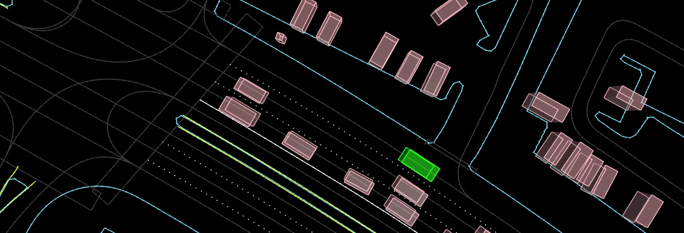
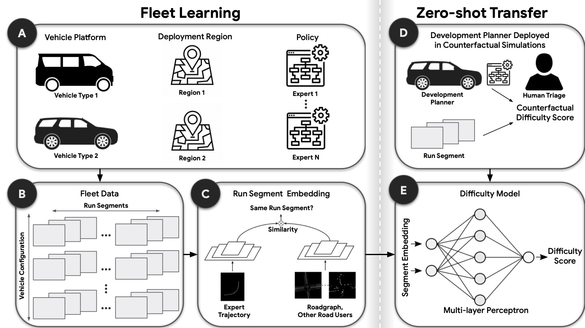
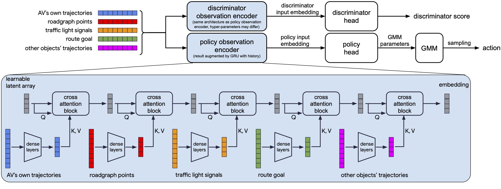
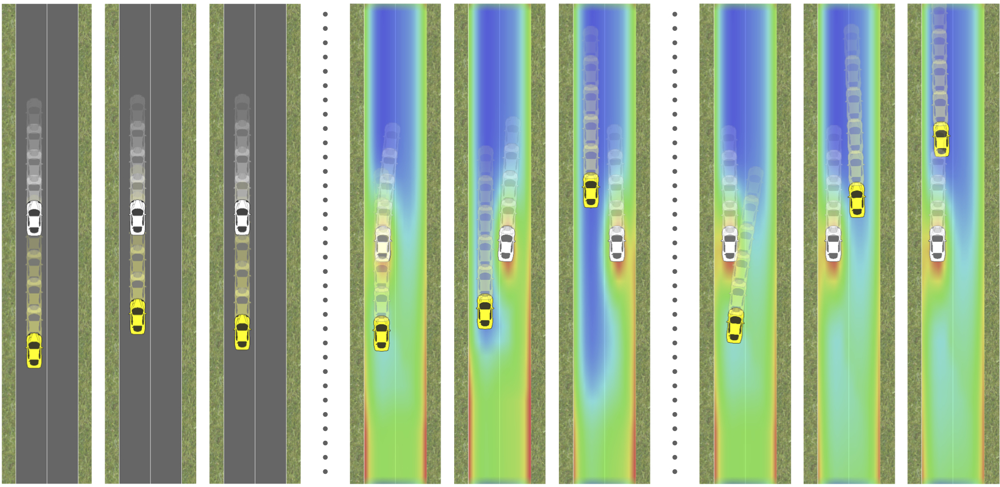
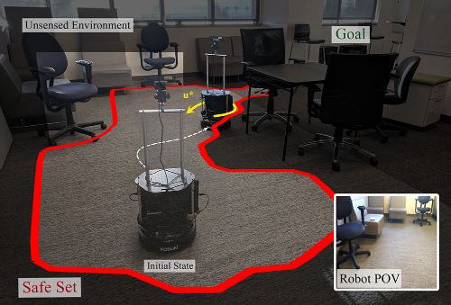
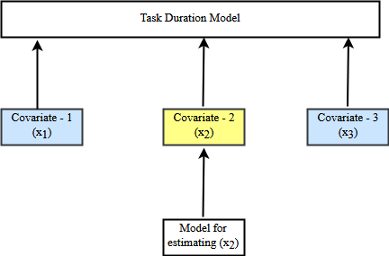
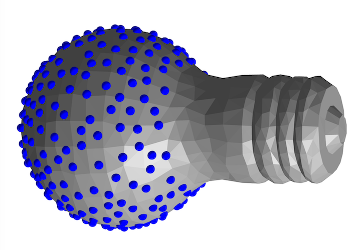

Research
I'm interested in creating AI systems that learn from and interact with people, leveraging machine
learning, reinforcement learning, and optimization. My research also involves the intersection of ML
and planning for autonomous driving and other robotic systems. Representative papers are highlighted.
|
|

|
Waymax: An Accelerated, Data-Driven Simulator for Large-Scale Autonomous
Driving Research
C. Gulino,
J. Fu,
W. Luo,
G. Tucker,
E. Bronstein
Y. Lu,
J. Harb,
X. Pan,
Y. Wang,
X. Chen,
J. D. Co-Reyes,
R. Agarwal,
R. Roelofs,
Y. Lu,
N. Montali,
P. Mougin,
Z. Yang,
B. White,
A. Faust,
R. McAllister,
D. Anguelov,
B. Sapp
Conference on Neural Information Processing Systems (NeurIPS), 2023
website
/
arXiv
/
code
Waymax is a library for simulating and evaluating agents using scenarios instantiated from the Waymo
Open Motion Dataset. It is designed to support behavioral research (single and multi-agent planning,
behavior prediction, sim agents) using the minimal representation of objects and bounding boxes
adopted by the Waymo Open Motion Dataset, without the need for users to run their own perception
system from raw sensor data.
Waymax is entirely written using JAX, allowing users to easily run simulations on hardware
accelerators, write programs in a single computation graph, and take advantage of JAX’s functional
transforms such as JIT compilation.
|
|

|
Embedding Synthetic Off-Policy Experience for Autonomous Driving via
Zero-Shot Curricula
E. Bronstein*,
S. Srinivasan*,
S. Paul*,
A. Sinha,
Matthew O'Kelly,
P. Nikdel,
S. Whiteson
Conference on Robot Learning (CoRL), 2022 (Oral
Presentation)
arXiv
ML-based motion planning is a promising approach to produce agents that exhibit complex behaviors,
and automatically adapt to novel environments. In the context of autonomous driving, it is common to
treat all available training data equally. However, this approach produces agents that do not
perform robustly in safety-critical settings, an issue that cannot be addressed by simply adding
more data to the training set - we show that an agent trained using only a 10% subset of the data
performs just as well as an agent trained on the entire dataset. We present a method to predict the
inherent difficulty of a driving situation given data collected from a fleet of autonomous vehicles
deployed on public roads. We then demonstrate that this difficulty score can be used in a zero-shot
transfer to generate curricula for an imitation-learning based planning agent. Compared to training
on the entire unbiased training dataset, we show that prioritizing difficult driving scenarios both
reduces collisions by 15% and increases route adherence by 14% in closed-loop evaluation, all while
using only 10% of the training data.
|
|

|
Hierarchical Model-Based Imitation Learning for Planning in Autonomous
Driving
E. Bronstein,
M. Palatucci,
D. Notz,
B. White,
A. Kuefler,
Y. Lu,
S. Paul,
P. Nikdel,
P. Mougin,
H. Chen,
J. Fu,
A. Abrams,
P. Shah,
E. Racah,
B. Frenkel,
S. Whiteson,
D. Anguelov
International Conference on Intelligent Robots and Systems (IROS), 2022 (Oral
Presentation)
arXiv
We demonstrate the first large-scale application of model-based generative adversarial imitation
learning (MGAIL) to the task of dense urban self-driving. We augment standard MGAIL using a
hierarchical model to enable generalization to arbitrary goal routes, and measure performance using
a closed-loop evaluation framework with simulated interactive agents. We train policies from expert
trajectories collected from real vehicles driving over 100,000 miles in San Francisco, and
demonstrate a steerable policy that can navigate robustly even in a zero-shot setting, generalizing
to synthetic scenarios with novel goals that never occurred in real-world driving. We also
demonstrate the importance of mixing closed-loop MGAIL losses with open-loop behavior cloning
losses, and show our best policy approaches the performance of the expert. We evaluate our imitative
model in both average and challenging scenarios, and show how it can serve as a useful prior to plan
successful trajectories.
|
|

|
Hierarchical Game-Theoretic Planning for Autonomous Vehicles
J. Fisac*,
E. Bronstein*,
E. Stefansson,
D. Sadigh,
S.S. Sastry,
A. Dragan
International Conference on Robotics and Automation (ICRA), 2019
arXiv
The actions of an autonomous vehicle on the road affect and are affected by those of other drivers,
whether overtaking, negotiating a merge, or avoiding an accident. This mutual dependence, best
captured by dynamic game theory, creates a strong coupling between the vehicle's planning and its
predictions of other drivers' behavior, and constitutes an open problem with direct implications on
the safety and viability of autonomous driving technology. Unfortunately, dynamic games are too
computationally demanding to meet the real-time constraints of autonomous driving in its continuous
state and action space. In this paper, we introduce a novel game-theoretic trajectory planning
algorithm for autonomous driving, that enables real-time performance by hierarchically decomposing
the underlying dynamic game into a long-horizon" strategic" game with simplified dynamics and full
information structure, and a short-horizon" tactical" game with full dynamics and a simplified
information structure. The value of the strategic game is used to guide the tactical planning,
implicitly extending the planning horizon, pushing the local trajectory optimization closer to
global solutions, and, most importantly, quantitatively accounting for the autonomous vehicle and
the human driver's ability and incentives to influence each other. In addition, our approach admits
non-deterministic models of human decision-making, rather than relying on perfectly rational
predictions. Our results showcase richer, safer, and more effective autonomous behavior in
comparison to existing techniques.
|
|

|
An Efficient Reachability-Based Framework for Provably Safe Autonomous
Navigation in Unknown Environments
A. Bajcsy*,
S. Bansal*,
E. Bronstein,
V. Tolani,
C. Tomlin
Conference on Decision and Control (CDC), 2019
arXiv
Real-world autonomous vehicles often operate in a priori unknown environments. Since most of these
systems are safety-critical, it is important to ensure they operate safely in the face of
environment uncertainty, such as unseen obstacles. Current safety analysis tools enable autonomous
systems to reason about safety given full information about the state of the environment a priori.
However, these tools do not scale well to scenarios where the environment is being sensed in real
time, such as during navigation tasks. In this work, we propose a novel, real-time safety analysis
method based on Hamilton-Jacobi reachability that provides strong safety guarantees despite
environment uncertainty. Our safety method is planner-agnostic and provides guarantees for a variety
of mapping sensors. We demonstrate our approach in simulation and in hardware to provide safety
guarantees around a state-of-the-art vision-based, learning-based planner.
|
|
|
Imitation Is Not Enough: Robustifying Imitation with Reinforcement Learning
for Challenging Driving Scenarios
Y. Lu,
J. Fu,
G. Tucker,
X. Pan,
E. Bronstein,
B. Roelofs,
B. Sapp,
B. White,
A. Faust,
S. Whiteson,
D. Anguelov,
S. Levine
Workshop on Machine Learning for Autonomous Driving, Neural Information Processing Systems
(NeurIPS), 2019
pdf
Imitation learning (IL) is a simple and powerful way to use high-quality human driving data, which
can be collected at scale, to identify driving preferences and produce human-like behavior. However,
policies based on imitation learning alone often fail to sufficiently account for safety and
reliability concerns. In this paper, we show how imitation learning combined with reinforcement
learning using simple rewards can substantially improve the safety and reliability of driving
policies over those learned from imitation alone. In particular, we use a combination of imitation
and reinforcement learning to train a policy on over 100k miles of urban driving data, and measure
its effectiveness in test scenarios grouped by different levels of collision risk. To our knowledge,
this is the first application of a combined imitation and reinforcement learning approach in
autonomous driving that utilizes large amounts of real-world human driving data.
|
|

|
Generating Highly Predictive Probabilistic Models Of Task Durations
I. Isukapati,
C. Igoe,
E. Bronstein,
V. Parimi,
S.Smith
IEEE Transactions on Intelligent Transportation Systems, March 2020
pdf
/
poster
In many applications, uncertainty in the durations of tasks complicates the development of plans and
schedules. This has given rise to a range of resilient planning and scheduling techniques that in
some way rely on probabilistic models of task durations. In this paper we consider the problem of
using historical data to develop probabilistic task models for such planning and scheduling
techniques. We describe a novel, Bayesian hierarchical approach for constructing task duration
distributions from past data, and demonstrate its effectiveness in constructing predictive
probabilistic distribution models. Unlike traditional statistical learning techniques, the proposed
approach relies on minimal data, is inherently adaptive to time varying task duration distribution,
and provides a rich description of confidence for decision making. These ideas are demonstrated
using historical data provided by a local transit authority on bus dwell times at urban bus stops.
Our results show that the task distributions generated by our approach yield significantly more
accurate predictions than those generated by standard regression techniques.
|
|

|
Grasp Transfer by Parts
E. Bronstein,
A. Talreja
Class project for EECS 106B: Robotic Manipulation and Interaction
pdf
Grasping, which focuses on enabling robots to manipulate objects, is challenging because of the
large space of possible grasps and object poses that must be considered. We seek to decrease the
complexity of planning grasps on objects by 1) segmenting a query object into parts, and 2)
transferring precomputed good grasps to these parts from parts of previously seen objects, with the
novel consideration that the query object and other object need not be from the same semantic class.
|
|
|
Extending Single-Task Policy Distillation in Reinforcement Learning
E. Bronstein,
Zhe Zheng
Class project for CS 294-112: Deep Reinforcement Learning
pdf
Deep learning models with a large number of parameters are often unnecessarily large and
time-consuming during both training and prediction. Policy distillation seeks to address this
concern by distilling the policy from a larger teacher network to a smaller student network. We aim
to improve the student network’s training sample complexity by considering 1) how a student
network’s exploration strategy affects its learning behavior, and 2) how a student network can
efficiently learn from multiple teachers of varying expertise.
To address the first question, we conduct experiments with teacher and student Deep Q-Networks in
the Pong environment and test several student exploration strategies (greedy, epsilon-greedy,
Boltzmann, and Bayesian exploration with dropout), finding that greedy and Bayesian strategies
result in minimal sample complexity.
To explore the second question, we pose the problem of multi-teacher single-task policy distillation
as a multi-armed bandit problem, where the teachers are the arms and the payoffs are the rewards the
student receives after learning from the teachers. We show that non-contextual bandit algorithms
such as random, epsilon-greedy, and UCB1 perform well when learning from multiple teachers, and UCB1
learns efficiently even when the teachers are of varying expertise. We also suggest how contextual
bandit algorithms can use the state observation to decide which teacher to learn from, thus learning
a holistic policy over the entire state space from teachers that are experts in subparts of the
state space.
|
|